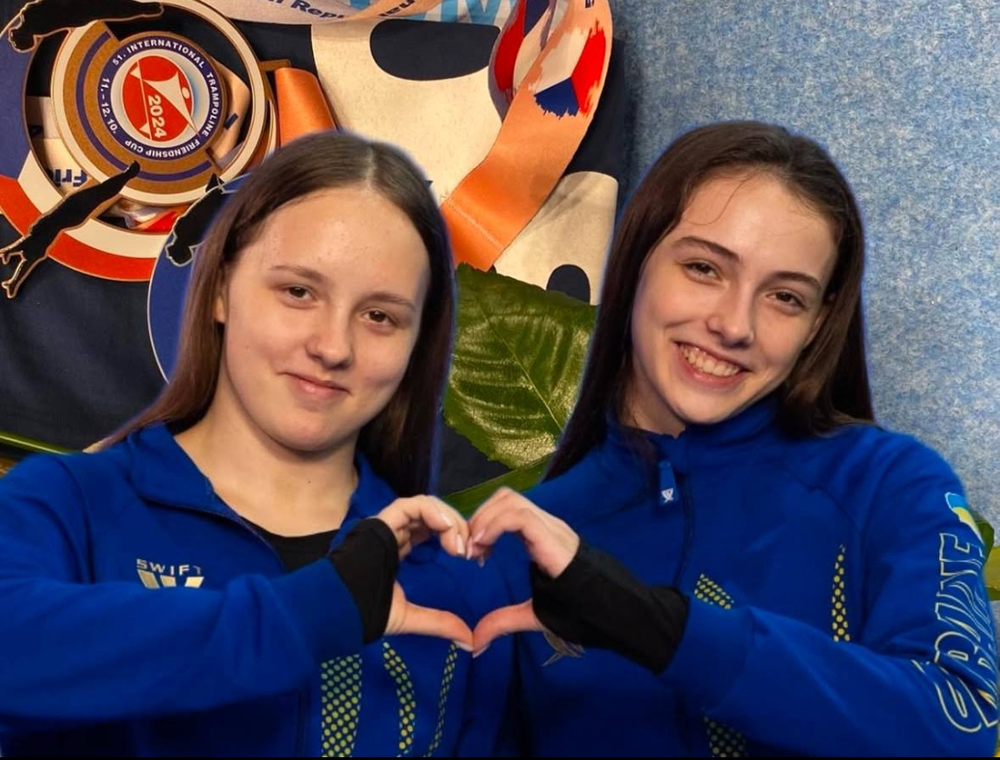

Історія та переваги
Батутний спорт – це дисципліна, яка включає в себе стрибки на батуті, що розвиває гнучкість, силу та координацію. Це один з найбільш видовищних видів спорту, який популярний у багатьох країнах світу. В Україні цей вид спорту також знаходить своїх шанувальників і активно розвивається.
Основними перевагами батутного спорту є покращення фізичної підготовки, розвиток витривалості та відчуття балансу. Стрибки на батуті зміцнюють м'язи, допомагають у реабілітації після травм та покращують загальну фізичну форму.
Топові спортсмени України

Аларова Софія та Пʼятакова Вероніка - найкращі українські спортсмени у батутному спорті.
Розклад тренувань, щоб стати топовими спортсменами
| День | Час | Тип тренування |
|---|---|---|
| Понеділок | 18:00 - 20:00 | Загальне тренування |
| Вівторок | 17:00 - 19:00 | Технічні стрибки |
| Середа | 18:00 - 20:00 | Загальне тренування |
| Четвер | 17:00 - 19:00 | Силові тренування |
| П'ятниця | 18:00 - 20:00 | Загальне тренування |
| Субота | 10:00 - 12:00 | Технічні стрибки |
| Неділя | Вихідний | — |
Контактні номери
Для отримання додаткової інформації або запису на тренування, будь ласка, звертайтеся за телефонами:
+38(111) 111 11 11
+38(222) 222 22 22